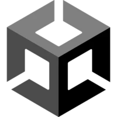
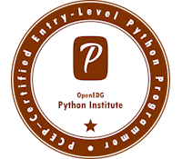

MES OUTILS & LANGAGES
Certaines légendes racontent que
les outils peuvent EVOLVER...
Étudiant BTS SIO • Spécialisation SLAM • Level 20
Bonjour ! Je m'appelle Maksene Dalil. Passionné d'informatique, j'ai trouvé ma voie dans le développement après un parcours riche en enseignements. Passionné par le jeu vidéo et l'intelligence artificielle, je souhaiterais après le BTS me diriger vers des études dans l'un de ces deux domaines. Prioriser une licence générale en 3ème année afin de voir les bases et ensuite me spécialiser en master.
Le Brevet de Technicien Supérieur Services Informatiques aux Organisations (BTS SIO) forme des experts en informatique capables de répondre aux besoins des entreprises. Il propose deux spécialités distinctes :

UnityUnity Certified User
En cours...
PythonPCEP™ – Certified Entry-Level Python Programmer
En cours...Certification des compétences numériques
✓ OBTENUObtention du Baccalauréat Spécialité Physique-Chimie / SVT. Une période fondamentale qui a forgé ma rigueur et ma méthode de travail. C'est vraiment durant le lycée que j'ai appris à travailler de façon méthodique et efficace.
Une année à l'université qui m'a permis de préciser mon projet professionnel et de confirmer mon attrait pour une formation plus technique et encadrée. Le manque d'accompagnement et le sentiment d'être obligé de suivre une filière en lien avec mes choix du lycée, n'était pas une bonne idée. Aller en BTS SIO fut le meilleur choix que je pus faire.
Formation en cours. Apprentissage approfondi du développement (PHP, JS, SQL, Python...) et gestion de projets informatiques. J'ai découvert ce qu'était réellement l'informatique et j'ai adoré.
Immersion au sein d'une équipe technique pour assurer le support niveau 1 et 2. Maintenance du parc informatique, configuration de postes de travail et initiation à l'administration réseau.
Développement d'un prototype de jeu 2D sous Godot Engine. Mise en place des mécaniques de gameplay, gestion des animations et optimisation des scripts en GDScript ainsi qu'un projet en 3D sous Unreal Engine. Gestion d'assets et de l'aspect graphique de l'ensemble des jeux.
Passionné par les jeux vidéo depuis toujours, je m'intéresse particulièrement aux mécaniques de gameplay innovantes et à l'intelligence artificielle dans les jeux. Le fait d'avoir pu réaliser mon stage en jeu vidéo a vraiment été une expérience incroyable à vivre
Fasciné par les possibilités de l'IA : création de PNJ intelligents, génération procédurale et systèmes adaptatifs.
J’apprécie associer programmation et créativité à travers la conception de projets informatiques. J’aime développer des solutions tout en réfléchissant à l’expérience utilisateur et à l’aspect visuel, ce qui me permet d’allier logique technique et sens du détail.